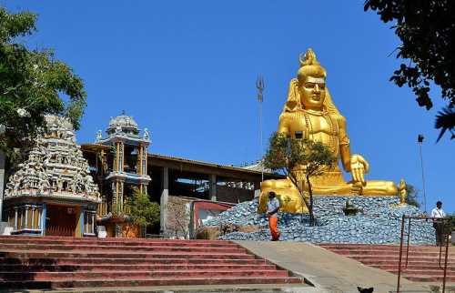
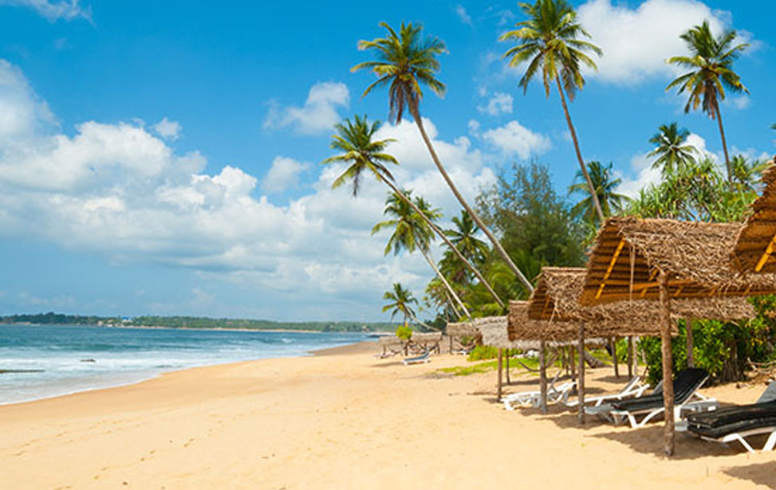
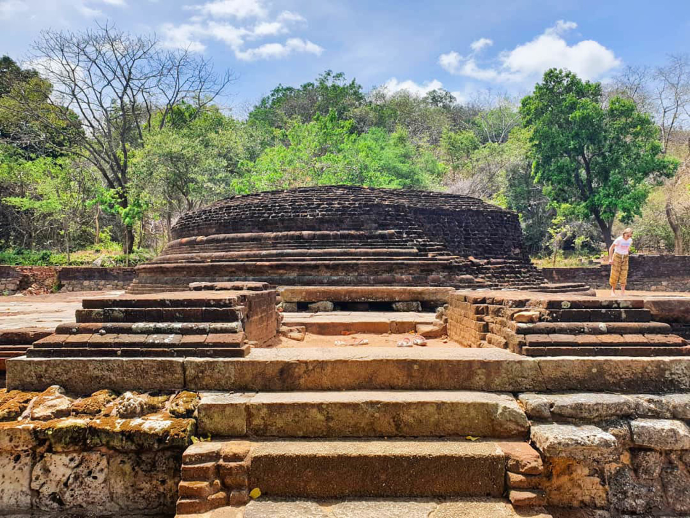
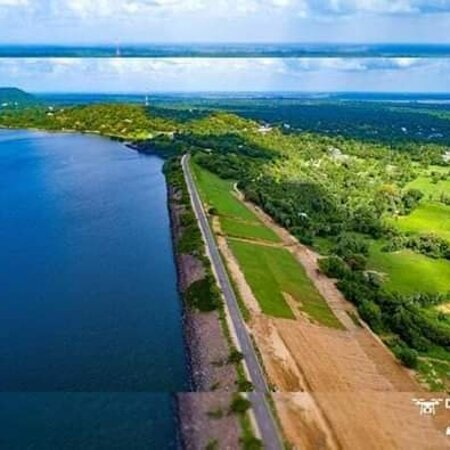

East Coast

Koneswaram temple of Trincomalee or Thirukonamalai Konesar Temple – The Temple of the Thousand Pillars and Dakshina-Then Kailasam
is a classical-medieval Hindu temple complex in Trincomalee, a Hindu religious pilgrimage centre in Eastern Province, Sri Lanka.

Scenic sandy beach featuring clear water with coral & marine life & boats to Pigeon Island.

Velgam Vehera is a historical Buddhist temple situated in Kanniya, Trincomalee District, Sri Lanka. It also known to Hindus
as Natanar Kovil. Historically Velgam Vehera was one of important Buddhist temples in the country, worshiped by both Sinhala and Tamil
Buddhists.

Located on the Polonnaruwa-Trincomalee road, the Kantale Tank is an ancient reservoir built by King Aggabodhi
II (604-614 AD) covering an extent of 3,750 hectares. Constructed for the irrigation of crops in this arid region, its source of water
is the Mahaweli River, the longest in the island, which flows out to the sea at Trincomalee.
|